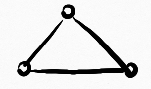

$\lambda^* = \sqrt{2 + \sqrt{5}} = $ 2.058171027...
Forbidden subgraphs
Equiangular lines
Spectral radius
Largest eigenvalue $\lambda_1(G)$ of adjacency matrix
$\lambda_1\big($$\big) = 1$, $\lambda_1\big($$\big) = \sqrt{2}$, $\lambda_1\big($$\big) = 2$
$\lambda_1$ is monotone
subgraphs have smaller spectral radius
$F(\lambda) := \{$ graphs with spectral radius $\le \lambda\,\}$
closed under taking subgraphs
Hereditary property
Graph properties closed under taking subgraphs
induced-hereditary, minor-hereditary
Robertson–Seymour theorem
Minor-hereditary property can be defined by
a finite set of forbidden minors
Forbidden subgraphs characterization
$F(\lambda) = \{$ graphs with spectral radius $\le \lambda\,\}$
Question. Can $F(\lambda)$ be defined by
a finite set of forbidden subgraphs?
Answer (J.–Polyanskii). Yes, if and only if $\lambda < \lambda^*$
and $\lambda \not\in \{\alpha_2, \alpha_3, \dots\}$, where $\alpha_m = \beta_m^{1/2}+\beta_m^{-1/2}$ and
$\beta_m$ is the largest root of $x^{m+1} = 1 + x + \ldots + x^{m-1}$
When $\lambda \ge \lambda^*$...
Lemma (Shearer). $\exists G$ s.t. $\lambda_1(G) \in (\lambda, \lambda + \epsilon)$.
Assume $G_1, \dots, G_n$ is a finite f.s.c. for $F(\lambda)$
Choose $G$ s.t. $\lambda < \lambda_1(G) < \lambda_1(G_i)$ for $i \in [n]$
$G_i$ is not a subgraph of $G$
Contradiction
When $\lambda < 2$...
$\lambda_1\big($$\big) = 2$, $\lambda_1\big($$\big) > \lambda$
If $G$ contains neithernor, then
$\implies G$ has $\le 3^n$ vertices
Further forbid graphs outside $F(\lambda)$ with $\le 3^n$ vertices
When $2 \le \lambda < \lambda^*$...
Work harder

Forbidden subgraphs
Equiangular lines
Equiangular lines
Lines through origin in $\mathbb{R}^n$,
angle between every pair is the same
Spherical $L$-code
Unit vectors $v_1, \dots, v_m$ in $\mathbb{R}^n$,
$\langle v_i, v_j \rangle \in L$, where $L \subseteq [-1,1)$
Observation. Equiangular lines $\Leftrightarrow \{\pm \alpha\}$-code
Maximum number of equiangular lines
$E_\alpha(n) := $ maximum cardinality of $\{\pm \alpha\}$-code in $\mathbb{R}^n$
| 1973 | Lemmens, Seidel | $E_{1/3}(n) \approx 2n$ |
| 1989 | Neumaier | $E_{1/5}(n) \approx \frac{3}{2}n$ |
| 1973 | Neumann | $E_{\alpha}(n) \le 2n$, $\alpha \neq 1/3, 1/5, \dots$ |
| 2016 | Bukh | $E_{\alpha}(n) \le c_\alpha n$ |
| 2018 | Balla, Dräxler, Keevash, Sudakov | $E_{\alpha}(n) \lesssim 1.93n$, $\alpha \neq 1/3$ |

Theorem (J.–Polyanskii).
For every $\lambda < \lambda^*$, $E_{1/(1+2\lambda)}(n) \approx \frac{k}{k-1}n$
where $k := \min\{v(G) : \lambda_1(G) = \lambda\}$
$E_{1/(1+2\lambda)}(n) \approx \frac{k}{k-1}n$
| $\lambda_1\big($$\big) = 1$ | $E_{1/3}(n) \approx 2n$ |
| $\lambda_1\big($$\big) = \sqrt{2}$ | $E_{1/(1+2\sqrt{2})}(n) \approx \frac{3}{2}n$ |
| $\lambda_1\big($$\big) = 2$ | $E_{1/5}(n) \approx \frac{3}{2}n$ |
Connection to forbidden subgraphs
Lemma (Balla et al.).
For fixed $\epsilon > 0$, $E_{1/(1+2\lambda)}(n) \lesssim E_L(n)$,
where $L = \big\{-\frac{1-\epsilon}{\lambda}+\epsilon, \epsilon\big\}$.
Suppose $C$ is $L$-code in $\mathbb{R}^n$, define $G$ on $C$:
$v_i \sim v_j \Leftrightarrow \langle v_i, v_j \rangle < 0$.
$A := $ adjacency matrix of $G$, $M := $ Gram matrix of $C$
$(\lambda I - A) + \frac{\epsilon\lambda}{1-\epsilon}J$ $ = \frac{\lambda}{1-\epsilon}M$ $\succeq 0$
Maximize $\left|C\right|$ s.t. $\mathrm{rank}(M) \le n$, or $\mathrm{rank}(\lambda I - A) \lesssim n$.
$A := $ adjacency matrix of $G$ with vertex set $C$
$(\lambda I - A) + \frac{\epsilon\lambda}{1-\epsilon}J \succeq 0$, $\mathrm{rank}(\lambda I - A) \lesssim n$
Claim $\lambda_1(G) \le \lambda$
Special case: $G$ is connected
If $\lambda_1(G) = \lambda$, then $|C| \ge k$, and Perron–Frobenius says $\mathrm{rank}(\lambda I - A) \ge |C| - 1 \ge \frac{k-1}{k}|C|$;
Otherwise $\mathrm{rank}(\lambda I - A) = |C|$.
General case: work on connected components
$A := $ adjacency matrix of $G$ with vertex set $C$
$(\lambda I - A) + \frac{\epsilon\lambda}{1-\epsilon}J \succeq 0$
Claim $\lambda_1(G) \le \lambda$ $\Leftrightarrow G \in F(\lambda)$
Suppose $\{G_1, \dots, G_n\}$ is a f.s.c. for $F(\lambda)$,
assume that some $G_i \subseteq G$
$(\lambda I - A_i) + \frac{\epsilon\lambda}{1-\epsilon} J \succeq 0$
$\implies \lambda - \lambda_1(G_i) + \frac{\epsilon\lambda}{1-\epsilon}v(G_i) \ge 0$
Punchline
Choose $\epsilon$ so small that above is $< 0$ for all $G_i$
Conjecture beyond $\lambda^*$
$E_{1/(1+2\lambda)}(n) \approx \frac{k}{k-1}n$, for all $\lambda$
In particular, $E_{1/7}(n) \approx \frac{4}{3}n$
Further results
$E_{1/(1+2\lambda)}(n) \gtrsim \frac{k}{k-1}n$, for all $\lambda$
$E_{1/7}(n) \lesssim \big(\frac{4}{3}+\frac{1}{36}\big)n$
$E_{1/(1+2\lambda)}(n) \lesssim 1.49n$, for $\lambda \neq 1, \sqrt{2}, 2$
Technion – Israel Institute of Technology
jiangzilin@technion.ac.il